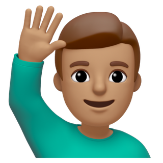

Ten small apps for everyday things. Pick a lantern to open one.

Hi, I'm Mridul, and this is my portfolio page: my page of ideas and works I've vibecoded. Hope it's to your liking!
Ten small apps for everyday things. Pick a lantern to open one.